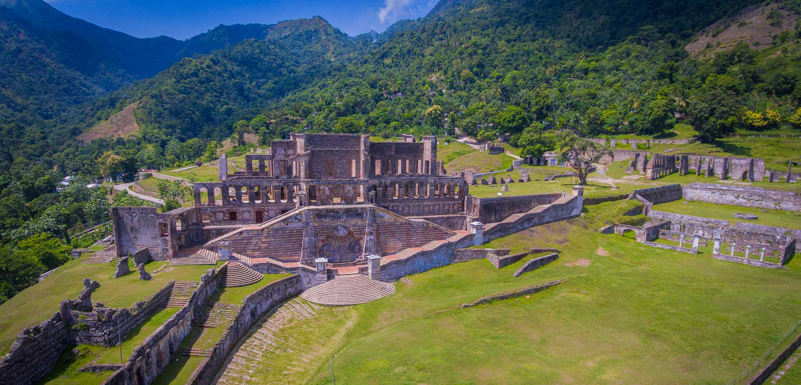
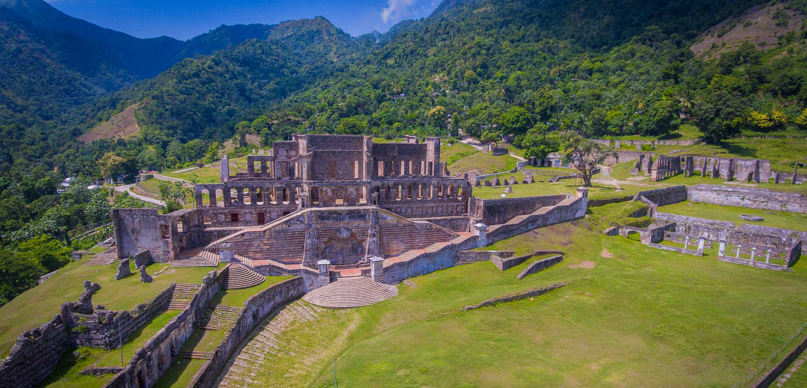

Fort Jacques et Fort Alexandre
Fort Jacques et Fort Alexandre constituent une des fortifications du système défensif improvisé par l'empereur Jean-Jacques Dessalines afin de prévenir le retour des Français après l'indépendance de l'île de Haïti. Les forts sont construits sous la direction du général Alexandre Pétion, au sommet des collines entourant la ville de Kenscoff près de Pétionville. Les forts sont nommés Alexandre en l'honneur d'Alexandre Pétion et Jacques en l'honneur de Jean-Jacques Dessalines. Le Fort Jacques est achevé en une année et armé de canons et de bombardes. Le Fort Alexandre est flanqué de quatre bastions d'angle. Le fort Alexandre est abandonné à la mort de Jean-Jacques Dessalines en 1806. Depuis le Fort Jacques, on peut voir entièrement la baie de Port-au-Prince.


fort des oliviers
Le 19 mars 1748, une escadre anglaise commandée par le vice-amiral Charles Knowles attaque le fort de Saint-Louis. La garnison du fort capitule : le vice-amiral Knowles convient avec Antoine de Caffaro, major du Fort Saint-Louis, que Saint-Louis serait port libre pour les navires anglais pour y faire de l’eau et du bois. Les Anglais font sauter une grande partie des remparts du fort2. Dans les années qui suivent, le centre de gravité du sud se déplace vers Les Cayes.
musée du Panthéon national haïtien (MUPANAH)
Le musée présente des vestiges , espagnols, coloniaux, et une section consacrée aux héros de l'indépendance avec notamment le pistolet en argent avec lequel Henri Christophe se suicida et la cloche ayant servi à annoncer l'indépendance. Il renferme également des chaînes d'esclaves, des instruments de torture, des sculptures, et accueille des expositions temporaires de peintures. Autre curiosité, l'ancre de la caraque de Christophe Colomb, la Santa Maria mesurant 4 mètres de haut2.

La grotte Marie Jeanne
La grotte Marie Jeanne, située au Sud d'Haiti, notamment dans la commune de Port-à-Piment, est la plus longue excavation naturelle de la Caraïbe1. Elle est ainsi nommée en mémoire de Marie-Jeanne Lamartinière2. Des traces archéologiques prouvent que son existence remonte à l'époque des Taïnos, les premiers habitants de l’île d'Haiti.

 

palais sans souci
Ce palais ainsi que ses dépendances ont été construits à partir de 1810, sous l'impulsion du général Henri Christophe, l'un des héros de la guerre de l'indépendance haïtienne, autoproclamé roi sous le nom de Henri Ier en mars 1811 de la moitié nord de l'actuelle Haïti dont la capitale était Cap-Haïtien